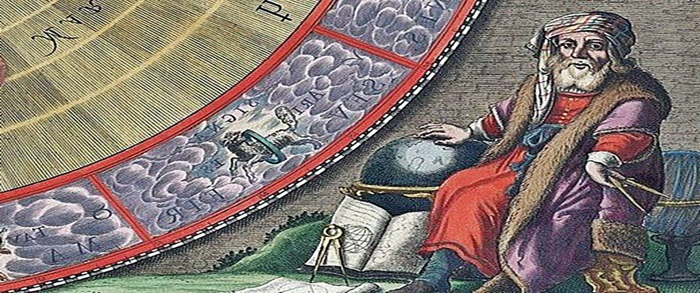

Arquivo de homenagens
Catálogo completo das homenagens publicadas, com busca direta por nome ou data e acesso imediato às páginas da seção.
Digite um nome ou uma data para localizar homenagens.
Seção especial • memória intelectual, histórica e humana
Espaço editorial dedicado à memória de intelectuais, obras literárias nacionais e estrangeiras, escritores(as), cientistas, pensadores(as), artistas e figuras históricas cujas trajetórias continuam a interpelar o presente.

Catálogo completo das homenagens publicadas, com busca direta por nome ou data e acesso imediato às páginas da seção.
Digite um nome ou uma data para localizar homenagens.


